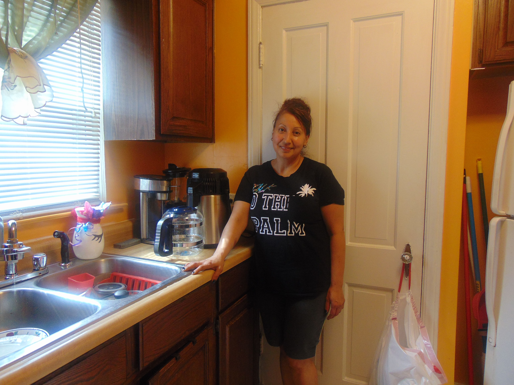
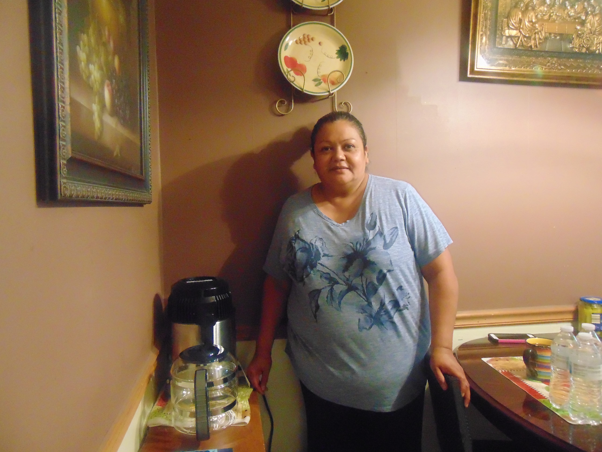
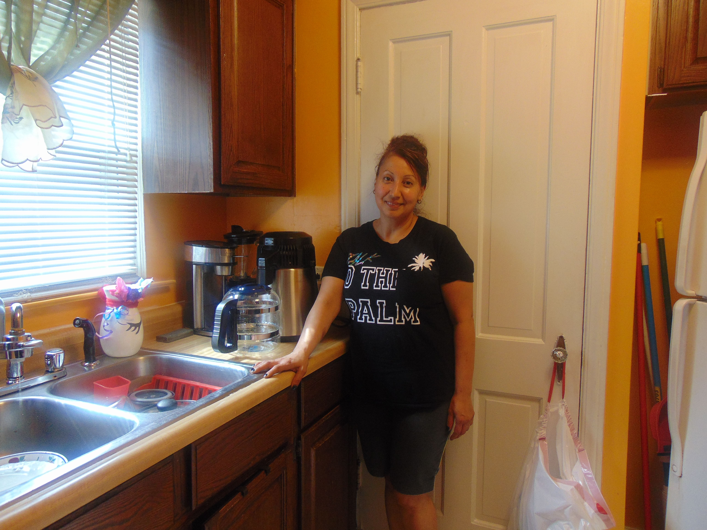
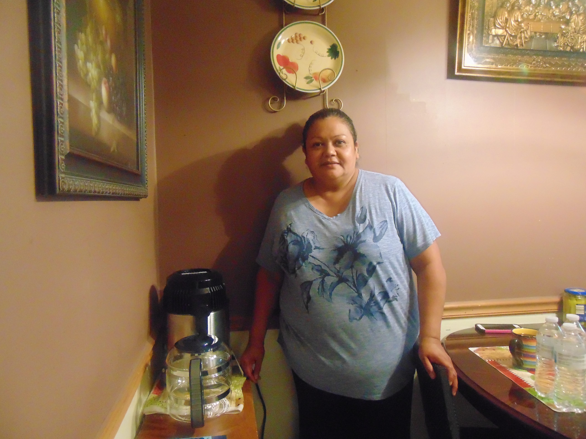

Our mission:
The Water Crisis Project puts the power back into people's hands by teaching them how to purify their own water and providing the resources necessary to do so.
Aid is inconsistent
Some people don't qualify for aid, others must travel out of the city, regardless of transportation restrictions, just to get water bottles. Some wait hours in line just to be turned away.
We provide:
Countertop distillers for personal, in-home use are the most effective way to purify water and eliminates the use of plastic water bottles.
They provide the convenience of having clean water in your own home, especially for those that cannot travel to clean water.
Distillers remove contaminants from water including heavy metals like lead and copper and distills abour 4 -8 gallons of pure, clean drinking water per day
The problem with bottled water:

- 25% or more of the water used can come from the tap, samples can contain phthalates, mold, microbes, benzene, trihalomethanes, even arsenic.
- Plastic bottles contain BPAs (all water bottles do regardless of the label) and when exposed to the sun, the plastic can leak into the water. BPAs can cause endocrine disruptors which can cause over stimulation of naturally occurring hormones in the body.
- Most of the time plastic bottles are not recycled. The plastic can end up in our oceans and water sources, contaminating them as well.
100% of your donation goes toward purchasing:
- Water distillers and supplies
- TDS meters
- Any additional supplies needed
$15
Provides a TDS meter
$25
Provides cleaning supplies for distillers
$100
Provides a TDS meter
$250
Provides a family with a water distiller
FAQ
Do you make any profit from my donation?
We do not take a profit on any donations. We aim to empower disenfranchised communities and to provide any additional services to help repair their communities
Why can't you use store bought water filters or bottled water?
We strongly advise avoiding the use of water bottles because the water used can contain contaminates. 25% of water
used are permitted to come from tap water. Also, plastic contaminates water, regardless if it’s stored in a cold
and hot area, and those contaminates can be lethal. Unfortunately, water filters do not remove all toxins
including lead and other heavy metals.
What can lead cause?
Lead can cause hypertension, in small doses, and kidney aliments, and, miscarriages, low-birth weight infants, and cognitive deficits which can
lead to behavioral issues in high doses. No amount of lead is safe!
We strongly advise avoiding the use of water bottles because the water used can contain contaminates. 25% of water used are permitted to come from tap water. Also, plastic contaminates water, regardless if it’s stored in a cold and hot area, and those contaminates can be lethal. Unfortunately, water filters do not remove all toxins including lead and other heavy metals.
Lead can cause hypertension, in small doses, and kidney aliments, and, miscarriages, low-birth weight infants, and cognitive deficits which can lead to behavioral issues in high doses. No amount of lead is safe!
Our work in Flint:

 





About Us:
I'm Louis Williams. Long ago, sometime around the 1980s, a friend of mine was studying civil engineering and we were discussing how water infrastructure in most American cities have old systems. The pipe were laid in early century and were made of lead. We knew then that lead was dangerous to ingest at any level.
I started to buy 5 gallon bottles of filtered water, but it did not take me long to figure out with human error I was still taking a risk by purchasing filtered water as I learned most filters failed to clean water efficiently.
It made sense to me that I can feel safe about distilled water that I processed myself because I'm the only one who can make sure of what I'm drinking is safe. Also, having the convenience of not lugging five gallon bottles is great!
My niece, Anura, and I saw this was another idea that would aid the folks in Flint to have a little more control of their lives. We want people to know that we are still watching and we care. We have not forgotten about Flint.
Keep goin' Flint,
Louis and Anura